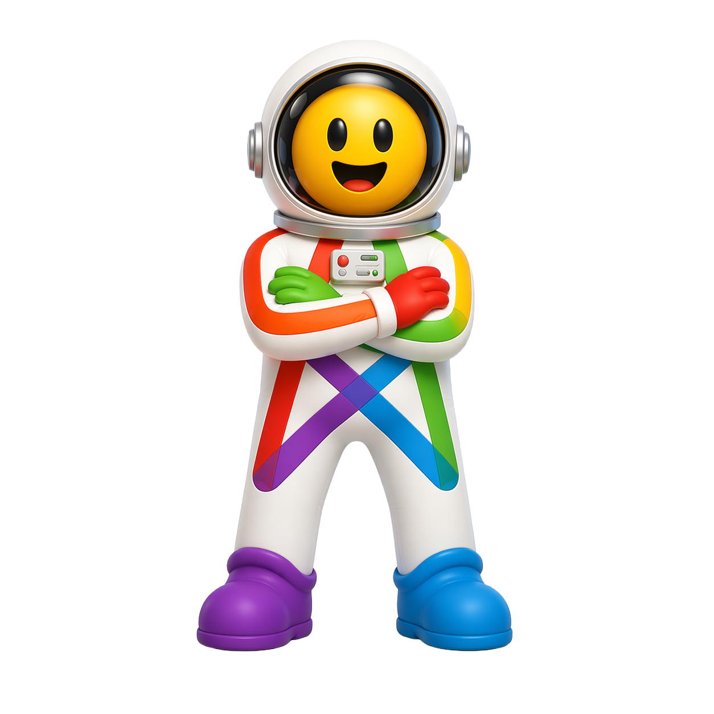

Fediverse je svět propojený nezávislými sociálními sítěmi. Není to pouze
„velká platforma" ovládaná jedinou firmou – systém tvoří tisíce serverů, které komunikují
navzájem.
Díky tomu můžeš sledovat účty v rámci celé sítě: od mikroblogů přes fotky a video až po
hudbu a komunity na fórech. A hlavně: bez reklamy a bez algoritmů, které skrytě určují,
co máš výchozně vidět.
Podívej se na krátké video, které princip fediverse přehledně vysvětlí.
What the Fediverse is and how to start
The Fediverse is a connected network of independent social platforms — instead
of one big company, it's built from thousands of servers that talk to each other. From a single
account you follow people across the whole network: microblogging, photos, video, music and
forums. No ads, no algorithm deciding for you. The short video below explains the idea in a few
minutes.
Video „Úvod do Fediverse" — Elena Rossini, CC BY-NC-SA 4.0, český překlad Jan Dytrych.
Nemusíš se bát
Nothing to be afraid of
Stačí jeden účet
Z jednoho účtu vidíš a sleduješ lidi napříč celým Fediverse — nezáleží, na kterém serveru jsou.
Instanci můžeš změnit
Když přejdeš jinam, vezmeš si sledující s sebou. Nejsi nikde uvázaný napevno.
Není to krypto
Žádný blockchain. Je to neziskové, otevřené a bez reklam — jen lidé a servery, co si povídají.
One account is enough
From a single account you can see and follow people across the whole Fediverse.
You can move servers
If you switch instances, your followers come with you.
It’s not crypto
No blockchain. It’s non-profit, open and ad-free.
Odkud přicházíš, nebo co chceš dělat?
Vyber síť, kterou znáš, nebo typ obsahu — ukážu ti odpovídající aplikaci ve Fediverse.
Odkaz „Začít" tě zatím vezme na oficiální stránku aplikace, později povede přímo k nám.
Where are you coming from, or what do you want to do?
Pick a network you know or a content type — I’ll show you the matching Fediverse app.
Vyber z nabídky a ukážu ti odpovídající aplikaci ve Fediverse.
Spokojen s naším doporučením? Pokračuj dalším krokem. Chceš víc možností?
Instance je tvůj domovský server. Záleží jen na tom, kde jsi přihlášený — sledovat a komunikovat můžeš s kýmkoli v celém Fediverse.
Tlačítko níže tě vezme do přehledu instancí filtrovaného pro tvou aplikaci. Filtruj podle zaměření nebo regionu a koukni na žebříček „pro začátečníky" — stojí na prověřenosti, ne na počtu uživatelů.
Pro tuhle aplikaci zatím nemáme český katalog instancí. Tlačítko níže tě vezme na oficiální stránku, kde si vybereš server a založíš účet. Pak se vrať sem na krok 4.
Nevíš, kde začít? Nabízíme výchozí bod: mamutovo.cz — česká komunitní instance na Mastodonu. Příspěvky mají limit 2 500 znaků místo běžných 500, takže se vejde i delší myšlenka. Registrace je po schválení správce — chodí do pár hodin a server si přitom udrží charakter.
Až si instanci vybereš, vrať se sem a pokračuj krokem 4 ↓
3. Choose an instance
An instance is your home server. It only matters where you’re signed in — you can follow and talk to anyone across the whole Fediverse.
The button below takes you to the instance list filtered for your app. Filter by focus or region and use the "for beginners" ranking — it’s based on vetting, not user count.
We don’t have a Czech instance catalog for this app yet. The button below takes you to the official site, where you pick a server and create your account. Then come back here for step 4.
Not sure where to start? We suggest mamutovo.cz — a Czech community Mastodon instance with a 2 500-character post limit (vs. the usual 500). Registration is by approval — the admin typically responds within a few hours.
Once you’ve chosen an instance, come back here and continue with step 4 ↓
4. Založ si účet
Na kartě instance klikni na Založ účet a projdi registraci přímo na serveru. Zvolíš si uživatelské jméno, e-mail a heslo — nic se neplatí, žádná karta.
Registrace čeká na schválení? Správce serveru musí žádost odsouhlasit. Přijde ti e-mail, obvykle do pár hodin. Zatím si v klidu projdi kroky 5 a 6 — čas nepřijde nazmar.
Tvůj výsledný handle bude ve tvaru @jmeno@server.cz — tak tě najdou ostatní z celého Fediverse.
4. Create your account
On the instance card click Sign up and complete registration directly on the server. You’ll pick a username, email and password — no payment, no card.
Registration pending approval? The server admin needs to approve your request. You’ll get an email, usually within a few hours. In the meantime, read through steps 5 and 6 — the time won’t be wasted.
Your handle will look like @name@server.social — that’s how anyone in the Fediverse can find you.
5. První den
Máš účet — tady je šest věcí, které stojí za to udělat hned na začátku:
Nastav profil — avatar, bio a hlavičku. Lidé na základě profilu rozhodují, koho sledovat.
Ověř svůj web přes rel=me — přidáš odkaz na svůj web do profilu a na webu odkaz zpátky. Detaily: Ověření profilu.
Napiš úvodní příspěvek s hastagem #nazdar nebo #introductions — řekni, co tě zajímá, a připni ho na profil.
Nainstaluj klienta — webové rozhraní stačí, ale nativní aplikace je pohodlnější. Koukni do Nástrojů.
Najdi lidi — krok 6 níže ti dá dva katalogy CZ/SK účtů.
Rozklikni domácí / lokální / federovanou osu — domácí jsou jen tví sledovaní, lokální jsou všichni z tvé instance, federovaná je mix všeho co instance zná.
5 věcí, co tu chodí jinak
CW (Content Warning) — citlivá témata, politiku nebo spoilery schováš za varování. Ostatní si sami zvolí, jestli chtějí číst.
Alt text — ke každému obrázku přidej popis. Je to norma, ne výjimka.
Hashtagy — full-text vyhledávání přes instance nefunguje; hashtagy jsou hlavní způsob, jak tě lidé najdou.
Boost místo citace — sdílíš příspěvek beze změny. Citační příspěvky se teprve postupně zavádějí.
Viditelnost — každý příspěvek má nastavení (veřejný, jen sledující, zmínka). Výchozí je veřejný.
5. Day one
You have an account — here are six things worth doing right away:
Set up your profile — avatar, bio and header. People decide who to follow based on your profile.
Verify your website via rel=me — add a link to your site in your profile and a link back on your site. Details: Profile verification.
Write an intro post with #introductions — say what you're into and pin it to your profile.
Install a client — the web UI is fine, but a native app is more comfortable. Check out Tools.
Find people — step 6 below gives you two CZ/SK account directories.
Explore your home / local / federated feeds — home is just who you follow, local is everyone on your instance, federated is everything your instance knows about.
5 things that work differently here
CW (Content Warning) — hide sensitive topics, politics or spoilers behind a warning. Others decide whether to read.
Alt text — add a description to every image. It's the norm, not the exception.
Hashtags — full-text search across instances doesn't work well; hashtags are the main way people discover you.
Boost instead of quote — you share a post as-is. Quote posts are only gradually being introduced.
Visibility — every post has a setting (public, followers-only, mention). Default is public.
6. Najdi lidi a komunity
Prázdná timeline je nejčastější důvod, proč lidé Fediverse opustí po prvním dni. Vyřeš to hned — tady jsou dvě kurátorované kotvy:
Fedík.online je český rozcestník po
Fediverse —
propojené síti nezávislých sociálních sítí (Mastodon, Pixelfed, PeerTube a další).
Není to sociální síť ani účet; je to průvodce, který Fediverse
vysvětlí česky a pomůže ti udělat první krok.

Je pro každého, kdo o Fediverse slyšel a neví, kde začít — od
úplných nováčků po lidi, kteří hledají konkrétní aplikaci, server nebo nástroj.
Všechno bez přihlášení a bez sledování.
Fedík nabízí tyto pohledy:
Začínáme — co je Fediverse a jak v něm začít.
Aplikace — katalog fediverse aplikací podle typu obsahu.
Instance — kde si založit účet (CZ/SK i prověřené globální).
Nástroje — klienti, mosty, objevovače a další.
Slovníček a Statistiky — pojmy a postupy + pár čísel o síti.
Fedík.online is a Czech guide to the
Fediverse —
the connected network of independent social networks (Mastodon, Pixelfed, PeerTube and more).
It isn't a social network or an account; it's a guide that explains
the Fediverse and helps you take the first step.
It's for anyone who has heard of the Fediverse and doesn't know
where to start — from complete newcomers to people looking for a specific app,
server or tool. No login, no tracking.
Fedík offers these views:
Start here — what the Fediverse is and how to begin.
Apps — a catalog of fediverse apps by content type.
Instances — where to create an account (CZ/SK and vetted global).
Tools — clients, bridges, discovery tools and more.
Glossary and Stats — terms and how-tos plus a few network numbers.
Links — articles, guides and videos about the Fediverse.
Search — full text across Fedík’s content (apps, instances, tools, glossary, links).
Do pole napiš, co hledáš — Fedík prohledá svůj vlastní obsah: aplikace,
instance, nástroje, hesla Slovníčku a odkazy. Nezáleží na velikosti písmen ani diakritice
(napíšeš „mastodon", najde „Mastodon") a celé to běží v prohlížeči, bez přihlášení.
Výsledky podle typu
Nálezy jsou seskupené do sekcí podle typu — Aplikace, Instance, Nástroje,
Slovníček, Odkazy — a zobrazené jako plné karty, stejné jako v příslušných pohledech.
Záložkami nahoře (Vše / Aplikace / Instance / …) si necháš zobrazit jen jeden typ.
Jak hledat
Víc slov = musí se objevit všechna (logické „a zároveň"). Přesnou frázi
uzavři do uvozovek — „content warning" najde jen to spojení.
Slovo vyloučíš mínusem — mastodon -klient. Slovníček hledá
i podle aliasů, takže „CW" najde heslo „varování obsahu".
Working with Search
Type what you're looking for — Fedík searches its own content: apps,
instances, tools, glossary entries and links. It's case- and diacritics-insensitive
(type “mastodon”, it finds “Mastodon”) and runs entirely in the browser, no login.
Results by type
Matches are grouped into sections by type — Apps, Instances, Tools, Glossary,
Links — shown as full cards, the same as in the respective views. The tabs on top
(All / Apps / Instances / …) let you show just one type.
How to search
Multiple words = all must appear (logical AND). Wrap an exact phrase in
quotes — “content warning” matches only that pairing.
Exclude a word with a minus — mastodon -client. The glossary
also matches aliases, so “CW” finds the entry “content warning”.
Jak pracovat s Aplikacemi
Pohled Aplikace je kurátorský katalog fediverse aplikací — co všechno
na Fediverse existuje a co která appka umí. Hodí se, když si vybíráš, kam si založit účet.
Co karta ukazuje
Logo a název, typ obsahu a obdobu známé sítě (např. „jako Twitter / X"),
odznak češtiny v rozhraní (ano / částečně / ne), živá čísla (uživatelé
a instance z FediDB), protokol a stav vývoje. Odkazy vedou na registraci, web a zdroják.
Filtry (levý panel)
Typ obsahu — mikroblog, fotky, video, fórum, hudba…
Obdoba — kterou komerční síť aplikace nahrazuje.
Čeština — má appka české rozhraní (ano / částečně / ne).
Managed hosting — jde použít bez vlastního serveru.
Vývoj — aktivní / zralý / experimentální / utlumený.
Žebříčky a řazení
Záložky nahoře: Vše, Nejvíc uživatelů,
Nejvíc instancí, Nejrychleji rostoucí a
Nové projekty. V „Vše" řadíš podle abecedy nebo počtu uživatelů/instancí
(výchozí je Nejvíc uživatelů). Čísla jsou orientační — z FediDB.
Working with Apps
The Apps view is a curated catalog of fediverse apps — what exists out
there and what each app does. Handy when choosing where to create an account.
What a card shows
Logo and name, content type and the mainstream equivalent (e.g. “like
Twitter / X”), the Czech UI badge (yes / partial / no), live numbers
(users and instances from FediDB), protocol and development status. Links go to sign-up,
the website and the source code.
Filters (left panel)
Content type — microblog, photos, video, forum, music…
Equivalent — which mainstream network the app replaces.
Czech UI — whether the app has a Czech interface (yes / partial / no).
Managed hosting — usable without running your own server.
Development — active / mature / experimental / dormant.
Rankings and sorting
Tabs on top: All, Most users, Most instances,
Fastest growing and New projects. In “All” you sort
alphabetically or by users/instances (default is Most users). Numbers are indicative — from FediDB.
Jak pracovat s Nástroji
Pohled Nástroje sdružuje klienty (aplikace pro Fediverse), mosty,
objevovače a další pomocníky — to, čím si Fediverse osladíš.
Co karta ukazuje
Logo a název, kategorii (klient, most, objevování, RSS, migrace),
platformy (Android, iOS, web, desktop), cenu a odznaky (oficiální /
doporučené). Odkaz Otevřít u jednoplatformních appek vede přímo do
App Store / Google Play / F-Droidu; „Zdroják" na repozitář.
Filtry a žebříčky
Kategorie, Platforma, Pro aplikaci a Cena.
Záložky: Vše · Doporučené · Nově přidané.
Working with Tools
The Tools view gathers clients (apps for the Fediverse), bridges,
discovery tools and other helpers — the things that make the Fediverse nicer.
What a card shows
Logo and name, category (client, bridge, discovery, RSS, migration),
platforms (Android, iOS, web, desktop), price and badges (official /
featured). For single-platform apps the Open link goes straight to the
App Store / Google Play / F-Droid; “Source” to the repository.
Filters and rankings
Category, Platform, For app and Price.
Tabs: All · Featured · Recently added.
Jak pracovat s Instancemi
Pohled Instance je adresář serverů, kde si reálně
založíš účet — české a slovenské (ze Sloníka) i prověřené globální.
Pomůže ti vybrat, kam patříš.
Co karta ukazuje
Logo a název, krátký popis, počet uživatelů, měsíční aktivitu, počet
příspěvků a stav registrací. Tlačítko Založit účet vede přímo na
registraci dané instance.
Žebříčky
Nahoře přepínáš mezi Vše, Pro začátečníky
(stojí na prověřenosti, ne na velikosti) a Nejvíc uživatelů.
Filtry
Vlevo Vyhledat, Řadit a fasety
Region, Aplikace a Zaměření instance.
Working with Instances
The Instances view is a directory of servers where you can actually
create an account — Czech and Slovak (from Sloník) plus vetted global
ones. It helps you pick where you belong.
What a card shows
Logo and name, a short description, the user count, monthly activity, post
count and registration status. The Create account button goes straight
to that instance's sign-up.
Rankings
At the top you switch between All, For beginners
(based on vetting, not size) and Most users.
Filters
On the left: Search, Sort and the
Region, App and Focus facets.
Jak pracovat s Odkazy
Pohled Odkazy je kurátorovaný rozcestník kvalitních článků
a návodů o Mastodonu a fediverse — česky i anglicky. Karty jsou seskupené
podle typu.
Filtry (levý panel / menu)
Typ — Vysvětlení, Návody, Pro provozovatele, Kontext.
Jazyk — čeština, angličtina.
Karta odkazu
Titul je odkaz na článek (otevře se v nové záložce). Pod ním
je jazyk, zdroj a aktuálnost — většina českých textů je z migrační vlny
2022/2023; obsahově drží, ale detaily prostředí se od té doby mohly změnit, proto
u každého uvádíme, jak je starý.
Working with Links
The Links view is a curated set of quality articles and guides
about Mastodon and the fediverse — Czech and English. Cards are grouped by type.
Filters (left panel / menu)
Type — Explainers, Guides, For instance admins, Context.
Language — Czech, English.
Link card
The title is a link to the article (opens in a new tab). Below it
you'll find the language, source and freshness — most Czech texts date from
the 2022/2023 migration wave; the substance holds up, but UI details may have changed
since, so each one notes how old it is.
FAQ — časté otázky
Proč se to jmenuje zrovna Fedík?
Začalo to u sourozeneckého projektu Sloník.online:
síť Mastodon má ve znaku mastodonta (příbuzného dnešním slonům) a katalog chtěl být tak trochu
slovníkem českého fediverse — slon + slovník =
Sloník. Fedík je jeho přirozená evoluce pro celý Fediverse:
Fediverse + slovník = Fedík.
Některé aplikace, instance nebo čísla tu chybí nebo nesedí. Proč?
Fedík ukazuje jen to, co vidí veřejné zdroje. Čísla jsou orientační —
síťové statistiky vidí jen instance, které crawlery znají, a počty CZ/SK uživatelů jsou
dolní odhad (jen účty na českých a slovenských instancích, ne Čechy a Slováky
na globálních serverech). Katalog aplikací, nástrojů a odkazů je navíc ručně
kurátorovaný, takže nemusí být úplný.
Chybí tu aplikace, nástroj nebo odkaz — nebo něco nesedí?
It started with the sibling project Sloník.online:
Mastodon depicts a mastodon (a relative of today's elephants) and the catalog wanted to be a bit of a
dictionary of the Czech fediverse — slon (elephant) + slovník
(dictionary) = Sloník. Fedík is its natural evolution for the whole
Fediverse: Fediverse + slovník = Fedík.
Some apps, instances or numbers are missing or look off. Why?
Fedík only shows what public sources can see. The numbers are indicative —
network stats only cover instances crawlers know about, and the CZ/SK user counts are a
lower bound (only accounts on Czech and Slovak instances, not Czechs and Slovaks
on global servers). The catalog of apps, tools and links is also hand-curated,
so it may not be complete.
An app, tool or link is missing — or something's wrong?
Správce instance schvaluje žádosti ručně, obvykle do několika hodin. Mezitím si projdi kroky 5 a 6 v průvodci — čas nepřijde nazmar. Pokud do druhého dne nic nepřišlo, zkus napsat správci instance přes web nebo zvol jinou instanci s otevřenou registrací.
Nemůžu najít kamaráda — jak ho vyhledat?
Stačí znát celý handle ve tvaru @jmeno@server.cz. Vlož ho do vyhledávacího pole přímo ve svém Mastodon klientovi nebo webovém rozhraní — server si účet dohledá (tzv. WebFinger). Pak ho můžeš sledovat bez ohledu na to, na které instanci je.
Jak se přestěhuju na jiný server?
Mastodon podporuje migraci účtu: na novém serveru si vytvoříš účet, nastavíš alias na starý účet a spustíš přesun. Sledující se přenesou automaticky; příspěvky zůstanou na starém serveru (nebo si je exportuješ). Detaily: Migrace účtu ve Slovníčku.
Timeline je prázdná — co s tím?
Na začátku je to normální — algorithmus tě tu neplní obsahem sám od sebe. Vyřeš to rychle: koukni do kroku 6 průvodce — dva kurátorované katalogy CZ/SK účtů a botů, které stojí za to sledovat.
FAQ for beginners
Registration approval is taking a long time — what now?
Instance admins approve requests manually, usually within a few hours. In the meantime go through steps 5 and 6 of the guide — the time won't be wasted. If nothing arrives by the next day, try contacting the instance admin through their website, or choose a different instance with open registration.
I can't find my friend — how do I search for them?
You just need their full handle in the format @name@server.social. Paste it into the search field in your Mastodon client or web interface — the server will look up the account (via WebFinger). You can then follow them regardless of which instance they're on.
How do I move to a different server?
Mastodon supports account migration: create an account on the new server, set an alias pointing to your old account, then trigger the move. Your followers transfer automatically; posts stay on the old server (or you can export them). Details: Account migration in the Glossary.
My timeline is empty — what do I do?
That's normal at the start — there's no algorithm filling your feed for you. Fix it quickly: check step 6 of the guide — two curated directories of CZ/SK accounts and bots worth following.
Technické řešení
Fedík.online je úmyslně jednoduchý: web je čistě statický
(HTML, CSS a trocha JavaScriptu), bez serverové aplikace, bez přihlašování
a bez cookies. Návštěvnost měříme jen anonymně a agregovaně
(self-hosted Umami na OSCLOUD),
bez osobních údajů. Všechna data jsou připravená předem — web jen zobrazuje hotové.
Odkud čerpá data
Fedík nemá vlastní crawler. Katalog aplikací a živá čísla
(uživatelé, instance) bere z FediDB
a jeho communityDB;
českou a slovenskou část — instance, účty i statistiky — ze
Sloník.online.
Texty a výběr aplikací, nástrojů a odkazů píše a udržuje člověk.
Kurace a kategorizace
Typ obsahu, „čeština v rozhraní" a stav vývoje u aplikací jsou ruční kurace;
loga jsou stažená lokálně (žádné hotlinky). Statistiky stojí na týchž vrstvách (FediDB +
Sloník) — nic se nesbírá navíc oproti pohledům Aplikace a Instance.
Provoz a publikace
Hotová data se nahrávají na statický hosting. Kód je oddělený od dat a přístupové
tokeny nikdy nejsou součástí webu. Fedík pracuje výhradně s veřejnými daty
a otevřenými rozhraními.
Fedík.online is deliberately simple: the site is fully static
(HTML, CSS and a bit of JavaScript), with no server application, no login and no
cookies. Traffic is measured only anonymously and in aggregate
(self-hosted Umami on OSCLOUD),
with no personal data. All data is prepared in advance — the site just displays the result.
Where the data comes from
Fedík has no crawler of its own. The app catalog and live numbers
(users, instances) come from FediDB
and its communityDB;
the Czech and Slovak part — instances, accounts and stats — from
Sloník.online.
The texts and the selection of apps, tools and links are written and maintained by a human.
Curation and categorization
Content type, “Czech UI” and development status for apps are hand-curated;
logos are downloaded locally (no hotlinks). Stats are built on the same layers (FediDB +
Sloník) — nothing extra is collected beyond the Apps and Instances views.
Operation and publishing
The finished data is uploaded to static hosting. Code is kept separate from data and
access tokens are never part of the website. Fedík works exclusively with public
data and open interfaces.
Za Fedíkem stojí Daniel Šnor — nadšenec do Mastodonu a celé
sítě Fediverse z českého prostředí.
Provozuje projekt Zprávobot.news —
veřejně prospěšnou službu, která zrcadlí oblíbené primárně české a slovenské
X/Twitter účty a přináší na Mastodon a Bluesky jinak chybějící zprávy,
sport, informace o technologiích, kultuře, a někdy i humor.
A katalog Sloník.online —
mapu českého a slovenského Mastodonu (lidé, instance, příspěvky). Fedík
z téhle rodiny vyrostl jako přirozené rozšíření: zatímco Sloník mapuje českou
a slovenskou část, Fedík vysvětluje celý Fediverse česky a provede
tě prvními kroky.
Fediverse fandí jako otevřené a decentralizované alternativě ke komerčním sítím —
bez algoritmů, reklam a sledování uživatelů.
Fedík is made by Daniel Šnor — a Czech enthusiast of Mastodon
and the wider Fediverse.
He runs the Zprávobot.news
project — a public-benefit service that mirrors popular, primarily Czech and
Slovak X/Twitter accounts, bringing otherwise-missing news, sport, technology,
culture and sometimes humor to Mastodon and Bluesky.
And the Sloník.online
catalog — a map of the Czech and Slovak Mastodon (people, instances, posts).
Fedík grew out of this family as a natural extension: while Sloník maps
the Czech and Slovak part, Fedík explains the whole Fediverse (in Czech)
and walks you through your first steps.
He’s a fan of the Fediverse as an open, decentralized alternative to commercial
networks — no algorithms, ads or user tracking.
Pár čísel a grafů o Fediverse — kolik je uživatelů, serverů a příspěvků, jak síť roste
a jak velká je její česká a slovenská část. Čísla jsou orientační (vidíme jen instance,
které crawlery znají) a čtou se z týchž zdrojů jako Aplikace a Instance — nic se nesbírá navíc.
Stats
A few numbers and charts about the Fediverse — how many users, servers and posts there are,
how the network is growing and how big its Czech and Slovak part is. The numbers are indicative
(we only see instances crawlers know about) and come from the same sources as Apps and Instances
— nothing extra is collected.